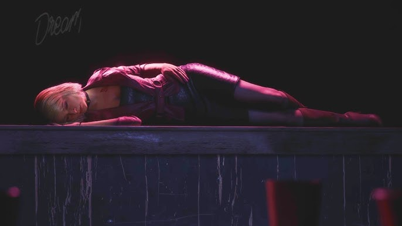

Quem é James Sunderland?
James Sunderland é o protagonista do jogo "Silent Hill 2". Ele é um homem comum, atormentado por um passado sombrio e pela perda de sua esposa, Mary. A história de James é central para a narrativa do jogo, explorando temas de culpa, perda e redenção.
Características de James Sunderland
O que torna James Sunderland especial?
James é um personagem complexo e multifacetado, cuja jornada emocional é o coração do jogo. Sua busca por respostas sobre a morte de sua esposa e sua luta para lidar com seus próprios demônios internos fazem dele um protagonista memorável e profundamente humano.

Conclusão
James Sunderland é um personagem icônico no mundo dos videogames, cuja história e personalidade cativaram jogadores ao redor do mundo. Sua jornada em "Silent Hill 2" é uma exploração profunda da psique humana, tornando-o um dos protagonistas mais memoráveis da série.
???

Quem é essa mulher misteriosa que aparece em momentos cruciais da história de James? Sua identidade e papel na trama são um mistério que intriga os jogadores, deixando espaço para inúmeras teorias e especulações.